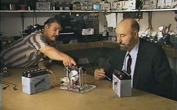

John Bedini and Tom Bearden in the Bedini Laboratory
|
Back-Popping a Two-Current Lead-Acid Battery WARNING: THE FOLLOWING EXPERIMENTS ARE HAZARDOUS. DO NOT ATTEMPT THESE EXPERIMENTS UNDER ANY CIRCUMSTANCES UNLESS YOU ARE AN EXPERIENCED ELECTRICAL RESEARCHER, EXPERIENCED IN PERFORMING EXPERIMENTS WITH LEAD-ACID BATTERIES AND PULSE CHARGE AND DISCHARGE OF SAME, AND UNLESS YOU ALSO USE ALL SAFETY PRECAUTIONS SUCH AS GOGGLES AND PROTECTIVE GLOVES, SLEEVES, AND APRON. YOU MUST NOT HAVE OTHER INFLAMMABLE LIQUIDS OR OTHER SUBSTANCES PRESENT WHICH COULD BE IGNITED AND BURN OR EXPLODE. SURGED LEAD-ACID BATTERIES PRODUCE HYDROGEN GAS, WHICH CAN EASILY EXPLODE SINCE SPARKING ALSO CAN OCCUR. THE ACID FROM SUCH AN EXPLOSION CAN EASILY BLIND YOU IF IT GETS IN YOUR EYES, AND IT CAN BURN YOUR SKIN. IN ADDITION, LEAD AND LEAD COMPOUNDS ARE POISONS, AND ARE TO BE HANDLED ONLY BY EXPERIENCED RESEARCHERS. THESE EXPERIMENTS ARE NOT FOR AMATEURS UNDER ANY CIRCUMSTANCE, BUT ONLY FOR EXPERIENCED PROFESSIONALS WITH PROPER KNOWLEDGE AND TRAINING, AND USING PROPER PRECAUTIONS. NEITHER THE AUTHOR NOR THE PUBLISHER IS REPONSIBLE OR LIABLE FOR ANY ACCIDENTS OR DAMAGE YOU MAY ENCOUNTER, AND ALL EXPERIMENTATION WITH THESE DEVICES AND PROCEDURES IS AT YOUR OWN ASSUMED PERSONAL RISK. More than one inventor has discovered or rediscovered a "magic" thing about lead-acid storage batteries powering circuits, usually without understanding precisely what it is that he has really discovered. The chemical and electrical actions going on in a lead-acid cell are quite complex, and involve interactions in both the positive plate, negative plate, and in the electrolyte itself. The usual chemical interactions primarily specify the overall changes of the plate materials from one form to the other (i. e. , for charge and for discharge conditions). However, there are many other ions (including both H+ which are free protons, and free electrons) involved in the reactions. Particularly significant is the double surface and overpotential effects. We state without further elaboration that the proper use of the overpotentials in these double surfaces can produce current that moves against the voltage. In other words, there are processes available in the battery that allow -- under very precise conditions -- parts of the battery to perform as negative resistors. When that action occurs, the very notion of "charge and discharge" is reversed. Further, the multiple currents and many nonlinear mechanisms involved, allow various currents to move in opposite directions; some with the voltage and some against the voltage. Again, we leave further analysis along that line to the experts, only appealing to them that time-reversal effects must also be considered. In other words, in addition to the "external charges" of molecules and atoms that they normally consider, there are also ongoing a huge variety of nuclear currents and charging that presently do not appear in any book on batteries, at least any I know of. There are at least three major currents in such a battery: (1) the ion current in the electrolyte, (2) the electron current in the conductors (electrode materials, terminal connectors, etc), and (3) charge transfer reactions at the electrode/electrolyte interfaces. For our purposes we shall consider primarily only the ion current and the electron current, and we consider only lead-acid batteries. For an introduction to various kinds of batteries, we refer the interested reader to a fine little text by Vincent, and to other similar texts on modern batteries. For deep understanding of the electrochemistry, we refer the reader to the full series of 13 volumes by Bockris and Conway. We shall also rather ignore the double layer effects, which are in fact quite important because they are responsible for the producing overpotentials, phase shifting of currents, etc. The present "analysis" can be materially deepened by taking into account the double surface layers, their redistributions of charge, the internal resistances of the cell to the various currents, etc. We leave that for the experts and encourage that it be done. Here we just wish to get at the basic servomechanism overshoot mechanism that one can evoke, which usually does not appear in conventional analyses at all. This mechanism can be used to produce (1) currents (either ion or electron or H+) moving against the voltage, (2) opposition charge densities which are then volumetrically "squeezed" to produce large overpotentials not normally connected with the charge transfer interactions at the double surfaces, and (3) specific phase shifting of currents. It is our contention that, by achieving proper timing of these overshoot effects in battery in ionic current resonance, one can produce an asymmetrically self-regauging battery which charges itself and also powers its load. For the purist, there are also other mechanisms involved that are still unknown, hence accounting for the "adjustments" and "tuning" that usually must be meticulously performed. For an equal charge, the ions in the lead ion current (say, in lead sulfate) are several hundred thousand times more massive than the electrons in the electron current. They are on the order of more than 200 times more massive than the H+ ions in that ionic current. Further, the ionic current will resonate (and probably other currents simultaneously as well, since resonance in this case probably represents a coordinated resonance among different currents) as shown by Ahluktenko, usually in the multi-megahertz range. Since the battery is so highly nonlinear in its dynamics, subharmonic and harmonic resonance effects also are present, particularly subharmonic resonances. We believe that it is also possible to couple and synchronize molecular oscillations, ion current oscillations, and material lattice oscillations in the electrodes, in harmonic and subharmonic oscillation fashion, but that is a quite different subject. Such more subtle (but can be powerful) effects may occur only after several minutes to several hours of operation in the "normal resonance" condition. So you can resonate the ionic current, or the "coordinated" currents. Relatively speaking — that is a coordinated current dominated by massive ions with lots of inertia and overshoot when the current tries to change intensity or reverse direction, due to Lenz's law (an induced emf in a conductor is always polarized in a direction so as to oppose the change that causes the induced emf). In this case we have a multiplicity of Lenz's law effects induced when we try to change the ionic current. Some of the accompanying currents can be affected quite differently from the ion current. Because of this Lenz law complex dynamics, a simple "back pop" to oppose the ion current, or to accelerate it, is not a simple current and voltage matter at all. Indeed, the exact relationships in such are a quite worthy study for some exotic physical chemistry. So we just grossly summarize, with rules-of-thumb, and delay the precision to future detailed studies by very fine laboratory teams. Here's the rough secret: the chemistry of the battery is largely dominated and affected by the ion current in the absence of overriding electron current, while the external load is dominated and affected by the electron current alone. You can easily pick a point in the ion current resonance cycle (say, when the ionic current in resonance is in the battery-charging half cycle), and just instantly switch the electron current to oppose it. That's a bit of an oversimplification; you actually must get the phasing correct to properly form new and increased overpotentials, precisely at the proper times so as to charge the battery and/or powering the load. Note that with currents moving in opposite directions, the intention is for one current to predominate in the battery in charging mode, while another current or group predominates in the load in discharging mode. If you powerfully oppose the ion current, Lenz's law is evoked powerfully, so that the ion current actually increases its charge capability for a moment, due to its massivity. The Lenz law emf and the back-popped emf also produce a tremendous stress potential (a scalar potential by another name), energetically lifting the ions and particles to a higher potential state. That is, you momentarily increased the reaction cross section of those ions and electrons etc., and so you increased the collector systems' dipolarity. Thus they momentarily receive and collect excess energy from their increased asymmetry in their active vacuum exchange. In short, they momentarily asymmetrically self-regauge, which is taking on free excess energy from the vacuum. We note that the generation of the Lenz law emf effect actually comes from the atomic nuclei, but do not further explain it. The point is, you just legitimately extracted excess energy from legitimate environmental sources. You converted the system into an open dissipative system, removing any necessity for it to conform to classical thermodynamics because it momentarily is far from equilibrium with its active vacuum environment. Further, the inertia of the ions together with the Lenz law effects, causes the ions to continue in charging mode. This in turn "volumetrically squeezes" the opposing charges into a smaller volume, further increasing the charge density and thereby the potential magnitude (i. e. , further increasing the asymmetry of all those charges in the vacuum exchange, and thereby absorbing more energy from the vacuum). The production of that "charge density squeeze" produces a new kind of overpotential that we can use to power the load (i. e. , in electron discharge mode) at the same time that the ion current continues to charge the battery. You've just got yourself a true free energy or negative resistor effect, if you can master it and use it with proper timing. Note that by simple switching (very sharply, in 5 nanoseconds or less) and phase relationships, you can take power electron current in the external circuit in the discharge mode, by simply letting this overpotential be connected to the external circuit to energize the Drude electrons. And you are momentarily doing that while you are still charging the battery. Since you are going to be producing "discharge pulses of Poynting energy flow from the overpotentials" onto the external circuit in brief spurts, it is wise to use the "pulse discharging" to also charge a "current smoothing" capacitor of proper capacitance. Therefore you convert your "overpotential pulses" in the external circuit into smoothed rippling current through the load. If you elaborate on these processes and play with them for awhile (like several months!), you can also see how to phase things in either "DC" through the load fashion, or "AC" through the load fashion. But the point is, you really can induce one or more processes that allow simultaneously charging the battery (changing the chemistry in the charging mode) while discharging energy onto the Drude electron gas in the external circuit, powering them up and thereby powering the load. And you have not violated any laws of physics or thermodynamics, and the conservation of energy law is enforced at all times. Presently I know of no other book or paper that has such as its stated goal. The books and current research seem to all try to "coherently organize and synchronize" the various battery processes and currents to maximize charging and maximize discharging efficiency, while keeping the two completely separate. On the other hand, our purpose is to "decoherently organize and synchronize" the various battery processes and currents, to accomplish charging of the battery and discharging through the load to power it, simultaneously. In short, we seek to convert the battery and its processes into an open dissipative system capable of overunity operation, and all the way to self-powering operation while powering a load also. The ion current can only sluggishly slow to a stop for its reversal; it requires it a finite amount of time to do that. So it continues right on charging the battery for awhile. During that ion current hysteresis or overshoot time, you have a tremendous "charge density squeeze" occurring. This gives you an overpotential to use, and you can use it in dramatically different manners, simultaneously, on differing current types. So you produce a large overpotential in spike or very sudden buildup, essentially "for free" or nearly so. The other end of that overpotential can be connected (switched onto) the load to deliver a surge of power (sorry for the "normal" terminology!) in the load because of the surge of the overpotential across it. If you time it correctly, you can get a much higher voltage surge from that overpotential, across the load's impedance. And that means you generate a higher electron current through that load, which consequently produces greater power because of the overpotential, than what you yourself had to pay for. Clever devil that you are, you used that massive old ion current's overshoot to "squeeze" the charge density dramatically upward and almost freely form that overpotential for you. Then you adroitly (and quite suddenly) connected that overpotential near its peak, right across the external circuit electrons, to power the load, and "let 'er rip. " After all, applying a voltage V to a circuit is in fact asymmetrically regauging that circuit and changing its collected energy. The magnitude of D V or overpotential is a measure of the additional amount of asymmetrical self-regauging of the system you obtained. It’s a measure of how much more the system was "opened" to receiving excess energy freely from its active vacuum potential environment. Who says you must have all the currents in the entire battery-external circuit systems all in phase or nearly so? Simply put, you wish the ion current in the battery to be about 180° out of phase with the electron current in the load. And as the ion current oscillates, you wish it highly overpotentialized in the charge mode, and very much less potentialized in its discharge half cycle (for resonance conditions). You need just the opposite in the electron current through the load. You need that current highly potentialized whenever it is flowing through the load. If you use DC power in the load, you must disconnect the overpotential formed by the back-popping "squeeze" and let the smoothing capacitor discharge to power the load, during the discharge half of the ion current Let me warn you that you must use microwave switching techniques, and you must switch in 5 nanoseconds or less; one nanosecond is better. The entire overpotential is likely to be over in about 20 to 40 nanoseconds, depending upon the specific battery, load, and other circuit conditions. Capacitance effects may extend this in some cases up to a microsecond. So if all you know is ordinary motor switching, go get the services of a microwave switching engineer first. The average motor switching fellow will be amazed at the notion of switching so suddenly. The microwave switching engineer will simply shrug his shoulders and say, "Piece of cake!" He does that every day without a second's hesitation. But as you can see, working your way through all this and getting everything timed just right, is still a significant undertaking. It's not a simple thing at all. You can also see why so many ordinary switching guys have failed at it, and why most of them were incapable of replicating John Bedini's little battery-popping self-powered motor system. If you are very clever with your measurements and timing, you can get that ion current to keep on resonating, and use it as a "very stiff oscillating spring" on which to store and release larger amounts of energy in terms of electron charges and potentials. You can manipulate the potentials, including the overpotential. You can essentially do what Nikola Tesla did in his circuits: You can shuttle potential and potential energy in different directions in different parts of your overall circuit, use multiple currents and multiple current directions. You can control what you do energetically in the various parts of the circuit. And you can eliminate the back-emf phenomenon that in the normal current loop with single current type is responsible for always killing the source dipole. Now you can continually restore the dipole and power the load independently, simultaneously. There are many variations on the above, at least four major ones. There are many additional ones when you apply other timed oscillations (LC oscillators), inductors, etc. to the circuit. In all, there are at least a hundred or more major variations you can make to this basic circuit operation. All have something to be said for them. Various inventors have discovered various ones of them. The end result is the partial removal of the Lorentz condition that is normally restored by forcing the killing of the source dipole. Now you can dramatically reduce the amount of "killing," and in fact have a net "restoring", while at the same time increasing the power in the load. A Recommendation to the Department of Energy We urge the experienced electrical laboratory teams in the DOE to give this one a real try. It's nearly all just ordinary theory, only with multiple currents having dramatically different response characteristics, all in the same circuit loop. There is also a little servomechanism theory involved, as well as the "charge density squeeze" to provide a large overpotential. You need microwave switching, and asymmetrical self-regauging thrown in. It's quite straight forward, it can fairly readily be made to work by an experienced lab team, and it's not expensive. But it does first require a dramatic change in the mindset of the experimenters and a completely different view of what you were taught as "conservation of energy. " If you cannot get past that orthodox practice of accounting only for the dissipated Poynting energy component, you will never understand it or do it. You are also treating and using a battery as the highly nonlinear system it really is, not just as a linear beast with a plus and a minus terminal, and a single current. You do not have to expend one half the free energy -- received from the vacuum by the source dipole and sent into the circuit -- to kill the source dipole! The assumption that you do, is a complete delusion. There is nothing in the conservation of energy law that requires that to happen in a circuit, once the energy is received from the vacuum and sent along the circuit. It's merely our own century-old stupidity and standard practice that keeps that insanity going in all our power systems. We again strongly warn the reader against casually experimenting with this, unless you are an experienced researcher, know what you are doing, and take proper precautions! This is for experienced lab people only. Even then, they must use all the proper procedures and precautions. You experiment with this at your own legally assumed risk. Still, big financial empires don't give up their empires without a real fight — by fair means or foul. And that fight includes the ruthless suppression of true negative resistors. Such as the really excellent battery poppers. Bedini's Battery-Popper Motor John Bedini is one of the most creative inventors on this planet. He is also a close friend and colleague. It was my great privilege to be able to work with John for several years. Though it was sad that he had such an inept pupil! John built several experimental motors (both electrical and magnetic) in the overunity area, and performed successful transmutation experiments. John is a recognized genius in high-end sound amplifier development. Many audiophiles worldwide still swear that the Bedini amplifier is the best and sweetest-sounding audio amplifier ever built. Even the test engineers for leading audiophile magazines have said so. One of John's battery-powered electrical motors, e.g., ran continuously off its battery for about five years, and kept the battery charged. When you realize that such a small electric motor is only about 35% efficient, then you realize that about 65% of the energy flowing out of the battery was being dissipated in the motor as heat, core losses, etc. So the unit was continuously performing work for that five years. The 1/8 hp motor represented a load in which the continuous rate of work being done (the rate of energy dissipation) was about 0. 08 hp. The little device was a battery-popper, and we have already covered the theory of such units in the treatise above. We need not repeat it here. John built a variety of other motors and generators, some of extremely novel design. Several of these units did work at overunity performance. John also was active in assisting other young inventors to get started. I can assure you of one thing. If I personally ever succeed in this area, then there are a few people who are going to be endowed. John Bedini is right up there at the top of the list. (See "Bedini's Method for Forming Negative Resistors in Batteries")
Nelson's Self-Regenerating "Back-Popped" Battery Power Unit WE CALL THE READER'S ATTENTION AGAIN TO THE PREVIOUS WARNING IN BOLD PRINT. DO NOT EXPERIMENT WITH THIS UNLESS YOU ARE AN EXPERIENCED EXPERIMENTER, PROPER QUALIFIED, AND TAKE ALL SAFETY PRECAUTIONS. YOU EXPERIMENT AT YOUR OWN ASSUMED RISK. Microwave switching engineer Bill Nelson and a colleague became interested in Bedini's little motor. So they met with John several times, discussed the theory of its operation at length, and even called me a time or two to see what thoughts I had. Once they thoroughly understood the principles, they reasoned that the motor was just a load, and all the action was in the battery as controlled by the switcher. Bedini confirmed that this was correct. Being expert microwave switching engineers and not motor engineers, they just used an ordinary lamp for the load. In the theory of such battery poppers below, we will see that microwave switching techniques are required. However, that posed no problem for Nelson and colleague. Before very long, they had a battery-popper working in the overunity, self-powering mode. It would keep its battery charged and also power the lamp. Nelson took his little demonstrator to his work (a large aerospace engineering firm) and showed it to his fellow engineers and scientists to test their reactions. He stated that (1) a few were naïve and would believe anything anyway, (2) some would instantly become hostile and disturbed and promptly leave, (3) some would become agitated and immediately wish to argue, even in a tirade, and (4) a few would closely examine the unit, with real scientific curiosity and open-mindedness though skeptical. At one time Nelson investigated putting a little kit on the market, but legally it was inadvisable. Popped lead acid batteries produce hydrogen gas and can explode. Someone very naïve would have hurt themselves, and entered a lawsuit. So there the matter rested. We corresponded sporadically for a few years, then that was that. But Nelson and colleague had demonstrated both the necessary and sufficient things to prove the concept and mechanism: (1) independent replication and (2) independent qualified testing which showed overunity operation. Watson's 8 kW Battery-Popper Motor WE CALL THE READER'S ATTENTION AGAIN TO THE PREVIOUS WARNING IN BOLD PRINT. DO NOT EXPERIMENT WITH THIS UNLESS YOU ARE AN EXPERIENCED EXPERIMENTER, PROPER QUALIFIED, AND TAKE ALL SAFETY PRECAUTIONS. YOU EXPERIMENT AT YOUR OWN ASSUMED RISK. Jim Watson successfully replicated Bedini's device (with direct advice from Bedini). Watson made improvements and modifications, and eventually was able to build one and adjust it as he wished. He demonstrated an 8 kW device at the first International Tesla conference in Colorado Springs. Later Watson was moving toward development and marketing. Then Watson and his entire family disappeared. Neither Bedini nor I could locate him. Neither could his financial backer, the late R. J. Reynolds III. This was a researcher and friend whom I was in contact with several times a week. Then bingo! Nothing further. He abruptly and completely broke off all communication with everyone. A squirrelly message was left on his answering machine for a few days, saying he had moved (but not in Jim's voice). Then it too was removed. And that was that. Eerily, it seems that if you call the police in the town where Jim Watson lived, they will tell you he still lives there on the same street in the same house. At least that's what they told a friend of mine who checked a few months ago, which is years after Jim and his family originally disappeared. And that check may be the oddest thing of all. The police implied on the phone that Jim and his family never disappeared. Everything fine. AOK. And that's a bald-faced lie. He and his family did disappear. No one could find them, regardless of how they tried. His financial backer couldn't even find him. The clear implication is, stay away from that one. Somebody "from the dark side" may have made Jim the "offer he could not refuse. " One may never know what really happened, whether or not Jim ever surfaces again — or has already surfaced again and is living there very, very quietly. But Jim's entire overunity motor effort ended abruptly, even though highly successful. And even though the motor was almost ready to be put into production. Watson has not been seen at an energy conference since that sudden mysterious disappearance. No one has had a phone call from him. I have not found anyone I trust who has seen him again. You have not seen a Watson overunity power system go to market. You almost certainly never will. Yet Jim's device was perfected to the point where he could make the things like pretzels, adjust them readily, and they worked every time. They could have been put into mass production very easily. Obviously that made him a grave threat to the Energy Cartels around the world. At rare intervals, the Energy Cartel does suppress an invention and an inventor by making the inventor "an offer he cannot refuse," in Mafia terms. Presently the going price when that offer is made, is $10 million. You take your $10 million, quit all research, quit your contacts, and you live. But you live very quietly, although you live very well financially. The engineers who measured Jim's 8 kW machine there in Colorado Springs are still alive. And they know what they measured. There's one other little thing. At that same International Tesla Conference in Colorado Springs, the folks who were in charge (for the energy barons) of suppressing all successful overunity devices in the Western world were also there when Jim demonstrated his 8 kW device. There is a certain effect which happens in a battery sometimes for a large overunity battery popper unit like that, if the device is "for real." Time-reversal operations and wave transductions can occur, resulting in time-excitation charging inside the battery materials, in a negative time charge sense (remember, the overunity operation is a negentropic operation). After a machine of that type and with that particular internal effects has been used to furnish energy for quite a while, you can make a definitive test on it. Simply hook it to a normal battery charger for that size battery, and start to charge it. You then may find to your surprise that the power will just seem to "disappear" in that battery, without charging the needle one iota, for 16 to 48 hours or longer, and in a rare case for two weeks. The reason is that wave transduction occurs of your charging spatial energy into time-energy, and so you have to furnish rather enormous energy to get a little bit of that negative-time charge reversed. After you fill that seemingly "bottomless pit", then suddenly the negative time-charge will have been eliminated, and at that point the battery will start to charge up in quite normal fashion. It is significant that Jim's battery was stolen right out of the machine. Whoever did it, almost certainly knew how to test it to find out if Jim's generator was actually a true overunity device. If so, then they tested it and found that indeed it was genuine. And there was only one group there who would have known that little tidbit. Dated: 1999 |